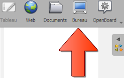
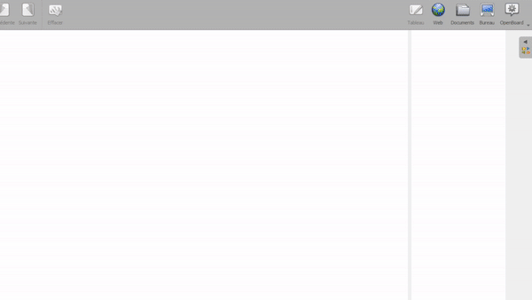

Mit anderen Apps interagieren
Wenn Sie den Desktop-Modus verwenden, können Sie mit Ihrem Betriebssystem und anderer Software interagieren, während OpenBoard darüber liegt !
Klicken Sie einfach auf das folgende Symbol :

Verwenden Sie den Selektor (), um mit dem Desktop und anderen Anwendungen zu interagieren.
Apps oder Webseiten annotieren
Sie können jede Software mit Anmerkungen versehen, indem Sie den Bleistift () oder den Marker () verwenden.

 Sie können auf weitere Optionen für , , , und zugreifen, indem Sie sie mit einem langen Klick anklicken oder auf den kleinen schwarzen Pfeil klicken.
Sie können auf weitere Optionen für , , , und zugreifen, indem Sie sie mit einem langen Klick anklicken oder auf den kleinen schwarzen Pfeil klicken.